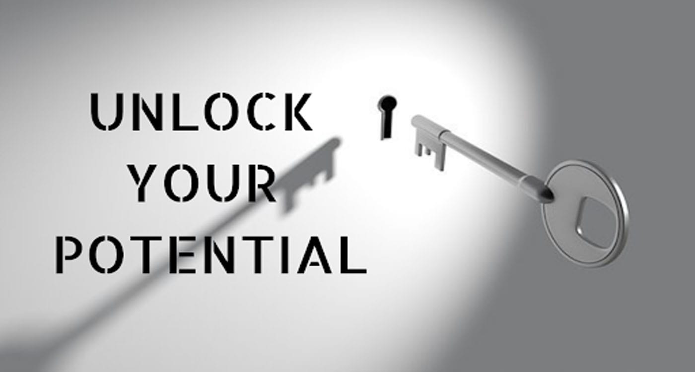

1st may, 2021
How to Unlock Your Potential and Create a Path to Self Improvement
One of the greatest gifts we have is the ability to unlock our potential and create a path to self-improvement. Everyone is capable of achieving goals, reaching personal milestones, and living a fulfilled life. It all starts with understanding yourself and taking decisive steps to create change. Here are a few steps you can take to begin unlocking your potential and creating a path to self-improvement:
1. Identify Your Strengths and Weaknesses: Take some time to really analyze who you are, your values, and what you are capable of achieving. Identify areas you feel strong in, as well as those that could use some improvement.
2. Set Goals: After understanding what you're good at and what areas need work, you can begin setting goals related to achieving success in those areas. Whether it's big or small, make sure your goals are achievable, measurable and meaningful to you.
3. Take Action: Creating self-improvement is largely about taking action. Focus on what you can do right now to make your goal a reality. For example, if you want to lose weight, start by eating healthier and exercising.
4. Perseverance and Willpower: It's important to stay focused and stay motivated. Perseverance and willpower will be key in reaching any goal you set.
5. Embrace Challenges: Numerous obstacles and challenges will arise throughout the process. Don't let them discourage you. Instead, learn from them and use them to your advantage.
6. Practice Self-care: Make sure to take care of your mental, physical, and emotional health. Self-care is just as important as other steps in reaching your goal.
7. Maintain a Growth Mindset: Remain open-minded and flexible as you take steps to reach your goals. The path to success is rarely linear. Stay focused on being better than you were yesterday, even if there are set-backs.
8. Celebrate Your Successes: Don't forget to celebrate every milestone you reach on your journey to self-improvement. Enjoy every victory and bask in the feeling of accomplishment.

1st may, 2021
Making Positive Changes: A Guide To Self-Help
Many people struggle with making positive changes in their lives. They feel like they're not good enough or that they can't be happy without the things they have now. This can lead to feelings of depression, anxiety, and even low self-esteem.
The good news is that you CAN change your life for the better! All it takes is a little bit of effort and some knowledge about how your mind works. By learning about your own habits and motivations, you can make changes that will help you live a happier, more fulfilling life.
This guide will teach you how to change the way you think about yourself so that you feel empowered—not defeated—by the obstacles in your way. You'll learn how to put yourself first instead of others or circumstances outside yourself; how to take control of your thoughts; and how to recognize when something isn't working for you anymore.
Why does self-help matter?
The answer to that question is as simple as it is complicated.
Self-help is a huge part of our lives, whether we're aware of it or not. We rely on self-help every day—whether it's an app on our phone or an article we read online. The fact is that the world has changed so much in the past few years, and many people aren't prepared for the changes they'll need to make in order to keep up with their peers and find success in their careers.
But what if there was a way to get ahead without making any major changes to your life? What if there were a way to get ahead without giving up anything you truly believed in? What if there were a way to get ahead without having to spend all your time studying and working?
The answer is: self-help! Self-Help can help you make positive changes in your life by giving you the tools and information you need to make those changes happen.

1st may, 2021
Daily practices to improve mental health
In order to improve your mental health, you need to practice the daily habits listed below. These habits can help you decrease your stress levels, increase your self-esteem, and boost your confidence.
Here are five of the most important practices you can start today:
1. Exercise daily—it helps us feel better, and getting exercise is proven to reduce depression and anxiety.
2. Eat breakfast—it’s been proven that people who eat breakfast tend to be more optimistic, less stressed, and more energetic throughout the day.
3. Meditate daily—meditation has been shown to reduce stress levels, increase feelings of well-being, and improve overall health.
4. Practice gratitude—gratitude activates our brains in a way that positive thinking cannot, which means practicing gratitude will help you feel happier than ever before!
5. Have a purpose in life—you may be surprised at how much better you feel when there’s a reason for getting up each morning other than just having “to do something” or “to get something done”; it makes working towards that goal more satisfying